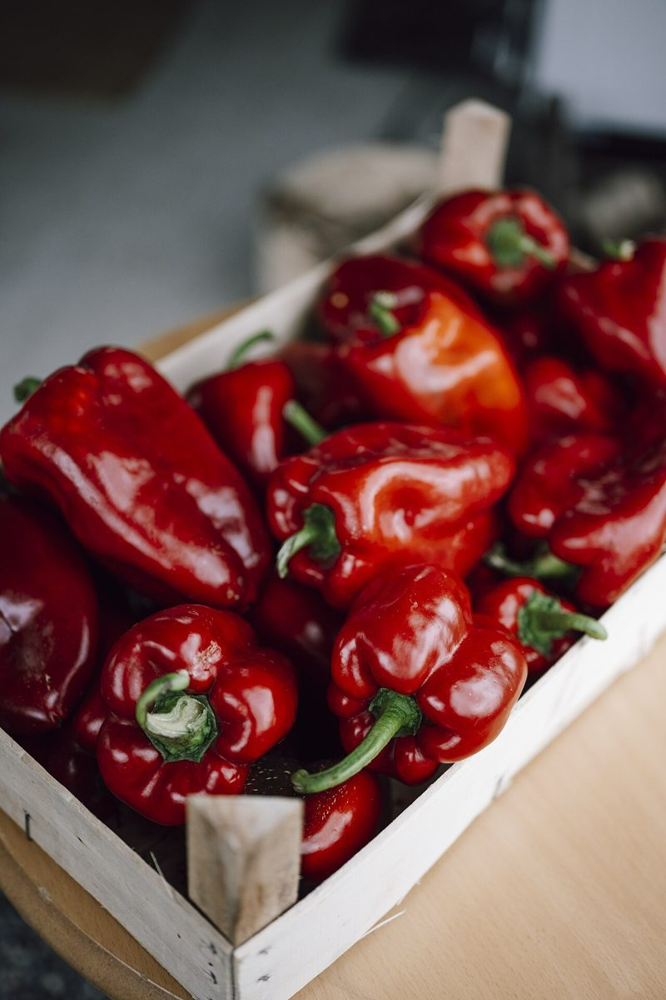

制作側の連想
四文字を、四枚の切手に見立てて
店名の由来は分かりません。このページは、制作側が「s・o・r・a」の四文字を見て、四枚つづりの切手シートを思いついたものです。ミシン目のない無地の切手を、ハサミで一枚ずつ切り分けるイメージで、四文字にひとつずつページを割り当てています。制作側の連想で、お店の理念・由来とは無関係です。
四枚の絵柄(イメージ)
切手の絵柄に選んだ、ものの寄り写真。
写真はお店のものではなく、撮影地不明のフリー素材です。飯田市やお店を写したものではありません。
 準備中s
準備中s
準備中o 準備中r
準備中r 準備中a
準備中aご案内
お店のこと(確認できたものだけ)
| 所在地 | 〒395-0814 長野県飯田市八幡町2151-11 |
|---|---|
| 電話 | なし |
| 営業時間 | 準備中 |
| 定休日 | 準備中 |
| ご予約 | 準備中 |
| 駐車場 | 準備中 |
| SNS | Instagram @_s__o__r__a_ |